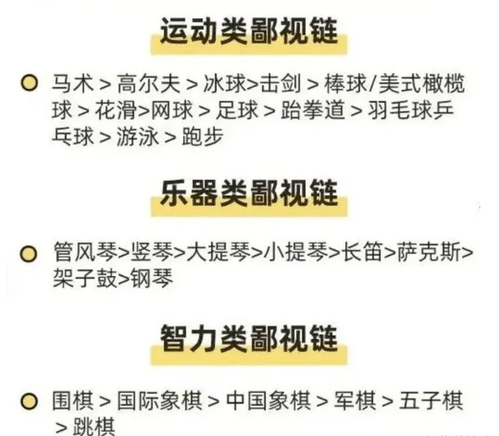
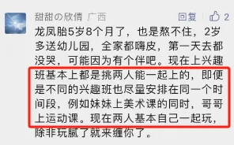
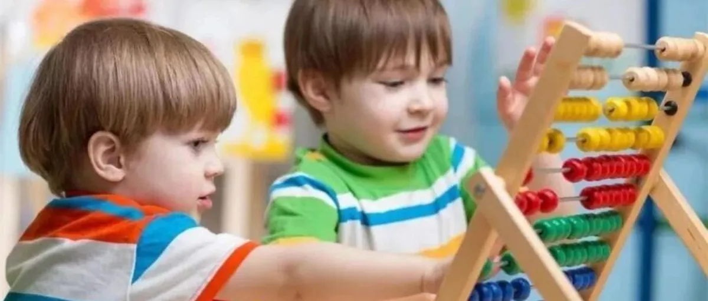
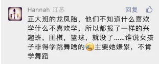
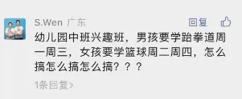
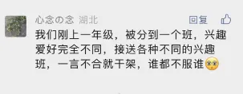

孖仔帮
公众号ID：twinsbang
关注
文|圆圈妈妈
网图|侵删
做四维彩超时，
我对医生说，我希望F1的宝宝会拉小提琴，F2的宝宝会谈钢琴。
医生笑了，不说话。
8年后，
F1的宝宝拿着枪，F2的宝宝舞着剑，齐刷刷地对我说：“妈妈，我们来决斗吧！”
我的艺术梦碎了一地，无奈，只能拾起衣架子，迎战吧！
--圆圈妈妈
上一篇《养育龙凤胎：想开，看开，放开...》，看到好多留言吐槽双胞胎的兴趣班。
选什么？怎么选？
今天这篇来聊聊。
现在的孩子，当下的兴趣班，可不一般，种类繁多就算了，还内卷得很，看看下面的兴趣班鄙视链！

说来惭愧，根据圆圈兄弟报过的兴趣班，估计连底层都算不上。
小班幼儿园，两人一脸懵还没开窍，说话都不太利索，没有报班。
到了中班，报了个什么公文数学班，结果学了一个学期，1+1都整不会，第二学期由于口罩原因，整个学期都在家放养。
来到大班，报了篮球课和幼小衔接班，
之所以选篮球，是因为我发现他们俩体力旺盛，没地方撒野，而且对球类运动感兴趣。
幼小衔接班学拼音，是我鸡娃的热血出现了短暂的沸腾，硬塞给他们的，很庆幸当初这个决定，回头另外写一遍分享给大家。
那么，身在兴趣班的底层，他们的结果如何呢？圆圈兄弟五音不全，才艺也不行，特长嘛，就更别提了，妥妥的普娃两枚。学校里有好多特色课程和社团，都轮不到他们，几乎边缘化。
那么，我后悔了吗？
嗯，没有！
圆圈兄弟不报趣味班，主要出于三个考虑：早产儿，男孩，而且还是7月出生。
和同龄孩子比，他们的体型是最小的，心智也相对不够成熟，集中注意力和自我控制能力也不强。
自知之明告诉我：就他俩那种状态，更需要自由的游戏和探索，而不是坐在兴趣班里硬憋着学习。
当然，这只是我们家的个案。
如果你家双胞胎的情况不同，经济条件允许，那也可以让他们尝试一下兴趣班。
比如，如果你和队友都工作到很晚，没法按时接娃，扔到兴趣班起码有老师看着；
或者有人接送，但不想那么早就把孩子接回来，怕破坏亲子关系；
或者你的小盆友对幼儿园的生活不太适应，希望孩子多在学校待一会，多和小伙伴们玩；
或者你就是个佛系家长，只求孩子开心，其他都不重要；
或者更强大，钱包里有点底气，即便double也能HOLD得住。
那就不妨试试，报个兴趣班吧！
至于报哪种兴趣班呢？智力类、运动类、艺术类...
如果你的初衷是纯粹为了孩子开心，那不管选哪种兴趣班，都会皆大欢喜。
但如果你的动机不单纯，期望过高，那就另当别论。
对于双胞胎家庭来说，其实最需要考虑的问题是，孩子们的兴趣班选一样？还是不一样？
OK，我给大家捋一捋...
选一样的：接送方便，一箭双雕，HAPPY ENDING！
选不一样的：接送时间难控制，让你狼狈不堪。一个孩子可能早早就下课，另一个还在里面，早下课的那个娃肯定会不停地轰炸你，嚷嚷着肚子饿，想吃点啥，喝点啥，或者吵着要回家做这个玩那个...结果，你只能耐着性子一边安抚着身边的娃，一边忍住怒火等着不知何时才会出现的另一个娃。
不过好处是，选不一样的班，尊重他们的个性成长，有助于培养孩子的独立性，特别是对于那种黏在一起、一掰就掰不开的双胞胎，也许会有意想不到的收获。
当然，还有一个办法，学学这位妈妈的经验，即使不同的兴趣班，也要尽量安排在同一个时间段上课。

圆圈兄弟的中班有一对龙凤胎，班上还有两对这样的孩子， 他们的家长都默认女孩学跳舞、合唱和奥尔夫课；而男孩就玩乐高，学尤克里里、篮球、足球或体适能。
只有我们家坚决采取脚踏一条船同呼吸共进退的方针政策：要报就一起报，不报就一起回家撒欢去！
不是他们俩有多么同心同德，而是我当时的母爱指数较低，认知水平有限，鸡娃的意识还没开窍：兴趣班里学什么都是其次，重要的是必须方便家长接送，别折腾人。
圆圈兄弟如今，虽然没有特殊才艺，但他们在家里的自由探索和游戏时间可不少；虽然他们没有参加各种兴趣班，但他们哥俩一起玩，也发现了许多有趣的事情，比如用积木搭建城堡，制作蛋糕模型，甚至自己编故事，然后互相讲给对方停...
我也有信心：他们的成长之路不会输给那些被塞进各种兴趣班的孩子。而且，我和他们之间的亲子关系也保持得很好，因为我们有足够的时间在一起，互相陪伴。
所以，无论你是要报什么兴趣班，还是干脆不报，最重要的是要以孩子的需求和个性为出发点。不要被兴趣班鄙视链左右，更不要陷入无意义的竞争泥淖中。
每个孩子都是独一无二的，他们的成长之路也应该是多彩多样的。

-END-
微信公众号：孖仔帮
ID : twinsbang
专注双胞胎孕育，养育，教育经验分享
扫码关注我们
点一下你会更好看耶



